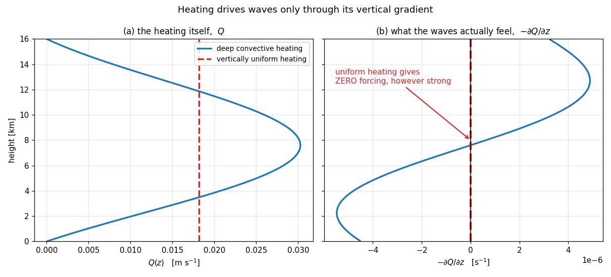
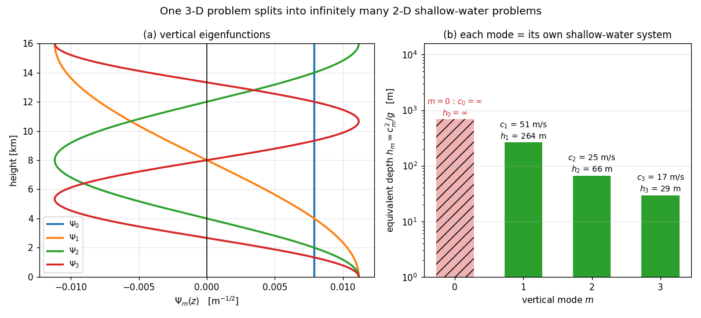
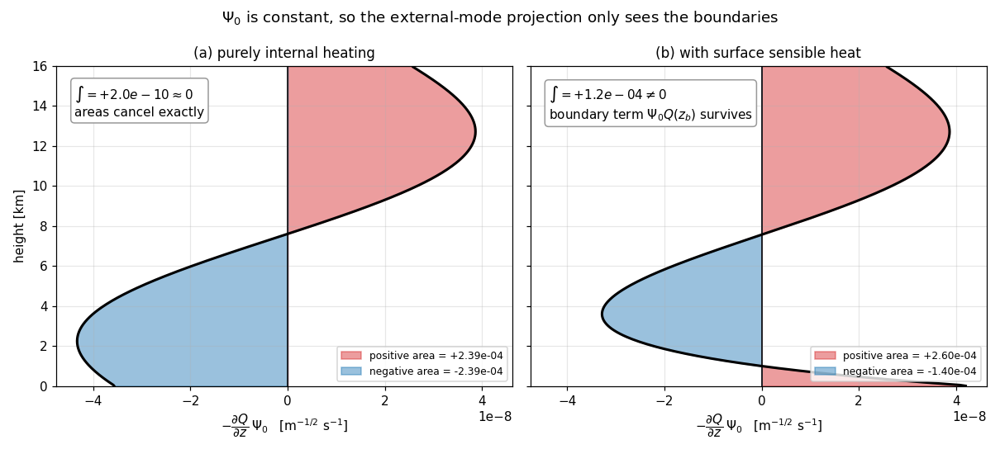

Vertical Structure Equation (垂直結構方程式與加熱的模態投影)#
證明目標:#
(a) 把線性化 Boussinesq 系統壓成一條只含「擾動氣壓 \(\Phi\)」與「水平輻散 \(D\)」的方程式，而非絕熱加熱以垂直梯度的形式出現在強迫項上：
(b) 選定垂直結構方程式的本徵函數 \(\Psi_m\) 之後，第 \(m\) 個模態滿足
等號右側就是所謂的 modal projection（模態投影）；取 \(m = 0\) 即為 external-mode projection。
(c) 剛蓋邊界條件下，\(m = 0\) 的本徵函數是常數，且其本徵值為零：
(d) 因此純內部加熱對 external mode 的投影恆為零，也就是不產生正壓輻散：
註：這條推導鏈的概念導覽、物理意涵與數值驗證，見 垂直模態分解 (Normal Mode Decomposition)。
假設與已知 (Assumptions & Preliminaries)#
【已知 1】 連續方程式 (Continuity Equation)： 此式已於 Advanced Atmospheric Dynamics 課程 week1 由雷諾傳輸定理完整證明，此處直接引用不再重證
\[\frac{\partial \rho}{\partial t} + \nabla\cdot\left(\rho\,\mathbf{u}\right) = 0\]\(\rho\) : 密度 (Density) \([\text{kg}\cdot\text{m}^{-3}]\)
\(\mathbf{u}\) : 三維速度向量 \(\left(u, v, w\right)\) (Three-dimensional velocity vector) \([\text{m}\cdot\text{s}^{-1}]\)
\(t\) : 時間 (Time) \([\text{s}]\)
【假設 1】 Boussinesq 近似 (Boussinesq Approximation)： 除了浮力項之外，密度一律取為常數 \(\rho_0\)
(a) 慣性項與質量守恆中的密度取常數：
\[\rho \approx \rho_0 = \text{const}\](b) 因此連續方程式退化為不可壓縮形式：
\[\begin{split}\begin{gather*} 0 &\overset{\text{已知 1}}{=}& \frac{\partial \rho}{\partial t} + \nabla\cdot\left(\rho\,\mathbf{u}\right) \\ 0 &\overset{\text{假設 1(a)}}{=}& \rho_0\,\nabla\cdot\mathbf{u} \\ 0 &=& \frac{\partial u}{\partial x} + \frac{\partial v}{\partial y} + \frac{\partial w}{\partial z} \end{gather*}\end{split}\]\(\rho_0\) : 常數參考密度 (Constant reference density) \([\text{kg}\cdot\text{m}^{-3}]\)
\(u,\ v,\ w\) : \(x,\ y,\ z\) 三方向的速度分量 (Velocity components) \([\text{m}\cdot\text{s}^{-1}]\)
【假設 2】 靜止基本態的線性化 (Linearization about a state of rest)： 先用雷諾分解 (Reynolds decomposition) 把場拆成「只隨高度變化的基本態」與「微小擾動」，再只保留擾動的一階項
(a) 位溫的雷諾分解：
\[\Theta\left(x, y, z, t\right) = \bar{\theta}(z) + \theta'\left(x, y, z, t\right)\](b) 氣壓的雷諾分解：
\[p\left(x, y, z, t\right) = \bar{p}(z) + p'\left(x, y, z, t\right)\](c) 基本態無風，因此速度場本身就是一階擾動量：
\[\bar{u} = \bar{v} = \bar{w} = 0\](d) 基本態只是高度的函數，與時間及水平位置無關：
\[\bar{\theta} = \bar{\theta}(z)\](e) 二階擾動項相對一階項可捨棄，此處以位溫平流為例：
\[\left|u\frac{\partial \theta'}{\partial x}\right| \ll \left|\frac{\partial \theta'}{\partial t}\right|\]\(\Theta\) : 總位溫場 (Total potential temperature field) \([\text{K}]\)
\(\bar{\theta}(z)\) : 基本態位溫 (Basic-state potential temperature) \([\text{K}]\)
\(\theta'\) : 位溫擾動 (Potential temperature perturbation) \([\text{K}]\)
\(p\) : 總氣壓場 (Total pressure field) \([\text{Pa}]\)
\(\bar{p}(z)\) : 基本態氣壓 (Basic-state pressure) \([\text{Pa}]\)
\(p'\) : 氣壓擾動 (Pressure perturbation) \([\text{Pa}]\)
\(\bar{u},\ \bar{v},\ \bar{w}\) : 基本態的速度分量 (Basic-state velocity components) \([\text{m}\cdot\text{s}^{-1}]\)
\(u\) : \(x\) 方向的速度分量 (Zonal velocity component) \([\text{m}\cdot\text{s}^{-1}]\)
【假設 3】 唯一熱源 (Single heat source)： 除了明確寫出的非絕熱加熱 \(S\) 之外，位溫沒有其他源項或匯項
\[\dot{\Theta}_{\text{other}} = 0\]\(\dot{\Theta}_{\text{other}}\) : \(S\) 以外的位溫源匯項 (Potential-temperature sources other than \(S\)) \([\text{K}\cdot\text{s}^{-1}]\)
【定義 1】 質量標準化擾動氣壓 (Mass-normalized pressure perturbation)：
\[\Phi \overset{\text{def}}{=} \frac{p'}{\rho_0}\]\(\Phi\) : 質量標準化擾動氣壓 (Mass-normalized pressure perturbation) \([\text{m}^{2}\cdot\text{s}^{-2}]\)
\(p'\) : 氣壓擾動 (Pressure perturbation) \([\text{Pa}]\)
\(\rho_0\) : 常數參考密度 (Constant reference density) \([\text{kg}\cdot\text{m}^{-3}]\)
【定義 2】 浮力擾動 (Buoyancy perturbation)：
\[b \overset{\text{def}}{=} g\frac{\theta'}{\bar{\theta}}\]\(b\) : 浮力擾動 (Buoyancy perturbation) \([\text{m}\cdot\text{s}^{-2}]\)
\(g\) : 重力加速度 (Gravitational acceleration) \([\text{m}\cdot\text{s}^{-2}]\)，\(g \approx 9.81 \ \text{m}\cdot\text{s}^{-2}\)
【定義 3】 浮力頻率平方 (Brunt–Väisälä frequency squared)：
\[N^2 \overset{\text{def}}{=} \frac{g}{\bar{\theta}}\frac{d\bar{\theta}}{dz}\]\(N^2\) : 浮力頻率平方，代表大氣的靜力穩定度 (Brunt–Väisälä frequency squared) \([\text{s}^{-2}]\)
【假設 4】 靜力穩定層結 (Statically stable stratification)： 基本態位溫隨高度遞增，因此浮力頻率平方恆正、可以拿來當除數
\[N^2(z) > 0\]\(N^2\) : 浮力頻率平方，代表大氣的靜力穩定度 (Brunt–Väisälä frequency squared) \([\text{s}^{-2}]\)
【定義 4】 水平輻散 (Horizontal divergence)：
\[D \overset{\text{def}}{=} \frac{\partial u}{\partial x} + \frac{\partial v}{\partial y}\]\(D\) : 水平輻散 (Horizontal divergence) \([\text{s}^{-1}]\)
【已知 2】 擾動場的靜力平衡 (Hydrostatic Balance for Perturbations)： 此式已於該檔由垂直動量方程式完整證明，此處直接引用不再重證
\[\frac{\partial}{\partial z}\left[\frac{p'}{\rho_0}\right] = \frac{g}{\bar{\theta}}\theta'\]\(p'\) : 氣壓擾動 (Pressure perturbation) \([\text{Pa}]\)
\(\rho_0\) : 常數參考密度 (Constant reference density) \([\text{kg}\cdot\text{m}^{-3}]\)
\(g\) : 重力加速度 (Gravitational acceleration) \([\text{m}\cdot\text{s}^{-2}]\)，\(g \approx 9.81 \ \text{m}\cdot\text{s}^{-2}\)
\(\bar{\theta}(z)\) : 基本態位溫 (Basic-state potential temperature) \([\text{K}]\)
\(\theta'\) : 位溫擾動 (Potential temperature perturbation) \([\text{K}]\)
註：該檔以 \(\phi\) 表示 \(P'/\rho_0\)、以 \(\theta_0\) 表示基本態位溫；本檔依【定義 1】改記為 \(\Phi\)、依 R4.4 的慣例改記為 \(\bar{\theta}\)，兩者所指相同。
【已知 3】 位溫的守恆方程式 (Potential temperature equation)： 非絕熱加熱是位溫沿流線改變的唯一原因
\[\frac{D\Theta}{Dt} \overset{\text{假設 3}}{=} S\]\(\Theta\) : 總位溫場 (Total potential temperature field) \([\text{K}]\)，\(\Theta = \bar{\theta}(z) + \theta'\)
\(S\) : 非絕熱加熱造成的位溫變化率 (Diabatic heating rate in potential temperature) \([\text{K}\cdot\text{s}^{-1}]\)
\(\dfrac{D}{Dt}\) : 全微分算符 (Material derivative) \([\text{s}^{-1}]\)，\(\dfrac{D}{Dt} = \dfrac{\partial}{\partial t} + u\dfrac{\partial}{\partial x} + v\dfrac{\partial}{\partial y} + w\dfrac{\partial}{\partial z}\)
【定義 5】 浮力型式的非絕熱加熱 (Diabatic heating in buoyancy form)：
\[Q_b \overset{\text{def}}{=} \frac{g}{\bar{\theta}}S\]\(Q_b\) : 浮力型式的非絕熱加熱 (Diabatic heating in buoyancy form) \([\text{m}\cdot\text{s}^{-3}]\)
【定義 6】 以層結縮放的加熱 (Stratification-scaled heating)：
\[Q \overset{\text{def}}{=} \frac{Q_b}{N^2}\]\(Q\) : 以層結縮放的加熱 (Stratification-scaled heating) \([\text{m}\cdot\text{s}^{-1}]\)
註：這個 \(Q\) 才是最終公式裡被微分的那一個，它並不是原始的加熱率，而是加熱率除以 \(N^2\)。這一點在解讀 \(\int -\partial_z Q\,\Psi_0\,dz\) 時極易被誤讀。
【推導 1】 線性化浮力方程式 (Linearized buoyancy equation)： 把位溫方程式線性化，再乘上 \(g/\bar{\theta}\) 換成浮力的語言
(a) 線性化位溫方程式：
\[\begin{split}\begin{gather*} S &\overset{\text{已知 3}}{=}& \frac{\partial \Theta}{\partial t} + u\frac{\partial \Theta}{\partial x} + v\frac{\partial \Theta}{\partial y} + w\frac{\partial \Theta}{\partial z} \\ &\overset{\text{假設 2(a)(d)}}{=}& \frac{\partial \theta'}{\partial t} + u\frac{\partial \theta'}{\partial x} + v\frac{\partial \theta'}{\partial y} + w\frac{d\bar{\theta}}{dz} + w\frac{\partial \theta'}{\partial z} \\ &\overset{\text{假設 2(c)(e)}}{=}& \frac{\partial \theta'}{\partial t} + w\frac{d\bar{\theta}}{dz} \end{gather*}\end{split}\](b) 改寫成浮力形式：
\[\begin{split}\begin{gather*} \frac{g}{\bar{\theta}}S &\overset{\text{推導 1(a)}}{=}& \frac{g}{\bar{\theta}}\frac{\partial \theta'}{\partial t} + \frac{g}{\bar{\theta}}\frac{d\bar{\theta}}{dz}w \\ Q_b &\overset{\text{定義 5}}{=}& \frac{g}{\bar{\theta}}\frac{\partial \theta'}{\partial t} + \frac{g}{\bar{\theta}}\frac{d\bar{\theta}}{dz}w \\ Q_b &\overset{\text{假設 2(d)}}{=}& \frac{\partial}{\partial t}\left[\frac{g\theta'}{\bar{\theta}}\right] + \frac{g}{\bar{\theta}}\frac{d\bar{\theta}}{dz}w \\ Q_b &\overset{\text{定義 2,定義 3}}{=}& \frac{\partial b}{\partial t} + N^2 w \end{gather*}\end{split}\]\(S\) : 非絕熱加熱造成的位溫變化率 (Diabatic heating rate in potential temperature) \([\text{K}\cdot\text{s}^{-1}]\)
\(\Theta\) : 總位溫場 (Total potential temperature field) \([\text{K}]\)
\(\bar{\theta}(z)\) : 基本態位溫 (Basic-state potential temperature) \([\text{K}]\)
\(\theta'\) : 位溫擾動 (Potential temperature perturbation) \([\text{K}]\)
\(u,\ v,\ w\) : \(x,\ y,\ z\) 三方向的速度分量 (Velocity components) \([\text{m}\cdot\text{s}^{-1}]\)
\(g\) : 重力加速度 (Gravitational acceleration) \([\text{m}\cdot\text{s}^{-2}]\)，\(g \approx 9.81 \ \text{m}\cdot\text{s}^{-2}\)
\(Q_b\) : 浮力型式的非絕熱加熱 (Diabatic heating in buoyancy form) \([\text{m}\cdot\text{s}^{-3}]\)
\(b\) : 浮力擾動 (Buoyancy perturbation) \([\text{m}\cdot\text{s}^{-2}]\)
\(N^2\) : 浮力頻率平方 (Brunt–Väisälä frequency squared) \([\text{s}^{-2}]\)
【推導 2】 擾動靜力平衡的浮力形式 (Perturbation hydrostatic balance in buoyancy form)：
\[\begin{split}\begin{gather*} \frac{\partial \Phi}{\partial z} &\overset{\text{定義 1}}{=}& \frac{\partial}{\partial z}\left[\frac{p'}{\rho_0}\right] \\ &\overset{\text{已知 2}}{=}& \frac{g}{\bar{\theta}}\theta' \\ &\overset{\text{定義 2}}{=}& b \end{gather*}\end{split}\]\(\Phi\) : 質量標準化擾動氣壓 (Mass-normalized pressure perturbation) \([\text{m}^{2}\cdot\text{s}^{-2}]\)
\(p'\) : 氣壓擾動 (Pressure perturbation) \([\text{Pa}]\)
\(\rho_0\) : 常數參考密度 (Constant reference density) \([\text{kg}\cdot\text{m}^{-3}]\)
\(g\) : 重力加速度 (Gravitational acceleration) \([\text{m}\cdot\text{s}^{-2}]\)，\(g \approx 9.81 \ \text{m}\cdot\text{s}^{-2}\)
\(\bar{\theta}(z)\) : 基本態位溫 (Basic-state potential temperature) \([\text{K}]\)
\(\theta'\) : 位溫擾動 (Potential temperature perturbation) \([\text{K}]\)
\(b\) : 浮力擾動 (Buoyancy perturbation) \([\text{m}\cdot\text{s}^{-2}]\)
【推導 3】 用擾動氣壓與加熱表示垂直速度 (Vertical velocity in terms of \(\Phi\) and \(Q_b\))： 靜力平衡把浮力綁死在 \(\Phi\) 上，於是熱力學方程式就變成了 \(w\) 的診斷式
\[\begin{split}\begin{gather*} Q_b &\overset{\text{推導 1(b)}}{=}& \frac{\partial b}{\partial t} + N^2 w \\ Q_b &\overset{\text{推導 2}}{=}& \frac{\partial}{\partial t}\left[\frac{\partial \Phi}{\partial z}\right] + N^2 w \\ N^2 w &=& Q_b - \frac{\partial}{\partial t}\left[\frac{\partial \Phi}{\partial z}\right] \\ w &\overset{\text{假設 4}}{=}& \frac{1}{N^2}\left(Q_b - \frac{\partial}{\partial t}\left[\frac{\partial \Phi}{\partial z}\right]\right) \end{gather*}\end{split}\]\(Q_b\) : 浮力型式的非絕熱加熱 (Diabatic heating in buoyancy form) \([\text{m}\cdot\text{s}^{-3}]\)
\(b\) : 浮力擾動 (Buoyancy perturbation) \([\text{m}\cdot\text{s}^{-2}]\)
\(N^2\) : 浮力頻率平方 (Brunt–Väisälä frequency squared) \([\text{s}^{-2}]\)
\(w\) : \(z\) 方向的速度分量 (Vertical velocity component) \([\text{m}\cdot\text{s}^{-1}]\)
\(\Phi\) : 質量標準化擾動氣壓 (Mass-normalized pressure perturbation) \([\text{m}^{2}\cdot\text{s}^{-2}]\)
【假設 5】 剛蓋邊界條件 (Rigid-lid boundary conditions)： 上下邊界都是不可穿透的水平剛性面；並且垂直模態是由無強迫的齊次問題所定義
(a) 上下邊界的垂直速度為零：
\[\left.w\right|_{z = z_b} = \left.w\right|_{z = z_t} = 0\](b) 定義模態時不含強迫：
\[Q_b = 0\]\(z_b\) : 下邊界（地表）高度 (Bottom boundary) \([\text{m}]\)
\(z_t\) : 上邊界（剛蓋）高度 (Top boundary) \([\text{m}]\)
【假設 6】 模態展開 (Modal expansion)： 把水平結構與垂直結構分離，並把垂直本徵函數正規化
(a) 擾動氣壓的展開：
\[\Phi(x, y, z, t) = \sum_{m=0}^{\infty}\hat{\Phi}_m(x, y, t)\,\Psi_m(z)\](b) 水平輻散的展開：
\[D(x, y, z, t) = \sum_{m=0}^{\infty}\hat{D}_m(x, y, t)\,\Psi_m(z)\](c) 垂直本徵函數的正規化：
\[\int_{z_b}^{z_t}\Psi_m^2(z)\,dz = 1\]\(\Psi_m(z)\) : 第 \(m\) 個垂直本徵函數 (The \(m\)-th vertical eigenfunction) \([\text{m}^{-1/2}]\)
\(\hat{\Phi}_m\) : 第 \(m\) 個模態的擾動氣壓振幅 (Modal pressure amplitude) \([\text{m}^{5/2}\cdot\text{s}^{-2}]\)
\(\hat{D}_m\) : 第 \(m\) 個模態的水平輻散振幅 (Modal divergence amplitude) \([\text{m}^{1/2}\cdot\text{s}^{-1}]\)
\(m\) : 垂直模態指標 (Vertical mode index) \([\text{無單位}]\)
【推導 4】 剛蓋邊界條件的模態形式 (Rigid-lid condition in modal form)： 邊界上垂直速度為零，等價於本徵函數的斜率為零（Neumann 型邊界條件）
\[\begin{split}\begin{gather*} 0 &\overset{\text{假設 5(a)}}{=}& \left.w\right|_{z = z_b,\ z_t} \\ 0 &\overset{\text{推導 3}}{=}& \left.\frac{1}{N^2}\left(Q_b - \frac{\partial}{\partial t}\left[\frac{\partial \Phi}{\partial z}\right]\right)\right|_{z = z_b,\ z_t} \\ 0 &\overset{\text{假設 5(b)}}{=}& \left.-\frac{1}{N^2}\frac{\partial}{\partial t}\left[\frac{\partial \Phi}{\partial z}\right]\right|_{z = z_b,\ z_t} \\ 0 &\overset{\text{假設 4}}{=}& \left.\frac{\partial}{\partial t}\left[\frac{\partial \Phi}{\partial z}\right]\right|_{z = z_b,\ z_t} \\ 0 &\overset{\text{假設 6(a)}}{=}& \sum_{m=0}^{\infty}\frac{\partial \hat{\Phi}_m}{\partial t}\left.\frac{d\Psi_m}{dz}\right|_{z = z_b,\ z_t} \\ 0 &\overset{\text{對任意 }\hat{\Phi}_m}{=}& \left.\frac{d\Psi_m}{dz}\right|_{z = z_b,\ z_t} \end{gather*}\end{split}\]\(w\) : \(z\) 方向的速度分量 (Vertical velocity component) \([\text{m}\cdot\text{s}^{-1}]\)
\(z_b,\ z_t\) : 下、上邊界高度 (Bottom and top boundaries) \([\text{m}]\)
\(N^2\) : 浮力頻率平方 (Brunt–Väisälä frequency squared) \([\text{s}^{-2}]\)
\(Q_b\) : 浮力型式的非絕熱加熱 (Diabatic heating in buoyancy form) \([\text{m}\cdot\text{s}^{-3}]\)
\(\Phi\) : 質量標準化擾動氣壓 (Mass-normalized pressure perturbation) \([\text{m}^{2}\cdot\text{s}^{-2}]\)
\(\hat{\Phi}_m\) : 第 \(m\) 個模態的擾動氣壓振幅 (Modal pressure amplitude) \([\text{m}^{5/2}\cdot\text{s}^{-2}]\)
\(\Psi_m(z)\) : 第 \(m\) 個垂直本徵函數 (The \(m\)-th vertical eigenfunction) \([\text{m}^{-1/2}]\)
\(m\) : 垂直模態指標 (Vertical mode index) \([\text{無單位}]\)
【定義 7】 垂直結構方程式與等效深度 (Vertical structure equation & equivalent depth)： 要讓【假設 6】的展開式中每個模態各自封閉成一條只含 \(\hat{\Phi}_m,\ \hat{D}_m\) 的方程式，\(\dfrac{d}{dz}\left[\dfrac{1}{N^2}\dfrac{d\Psi_m}{dz}\right]\) 就必須能寫回 \(\Psi_m\) 的常數倍，否則 \(z\) 相依甩不掉。這條要求同時定義了垂直本徵函數 \(\Psi_m\) 與分離常數 \(c_m\)
(a) 垂直結構方程式：
\[\frac{d}{dz}\left[\frac{1}{N^2}\frac{d\Psi_m}{dz}\right] \overset{\text{def}}{=} -\frac{1}{c_m^2}\Psi_m\](b) 等效深度：
\[h_m \overset{\text{def}}{=} \frac{c_m^2}{g}\]\(N^2\) : 浮力頻率平方 (Brunt–Väisälä frequency squared) \([\text{s}^{-2}]\)
\(\Psi_m(z)\) : 第 \(m\) 個垂直本徵函數 (The \(m\)-th vertical eigenfunction) \([\text{m}^{-1/2}]\)
\(c_m\) : 第 \(m\) 個模態的分離常數，物理上是該模態的重力波相速 (Separation constant / gravity wave speed) \([\text{m}\cdot\text{s}^{-1}]\)
\(h_m\) : 第 \(m\) 個模態的等效深度 (Equivalent depth) \([\text{m}]\)
\(g\) : 重力加速度 (Gravitational acceleration) \([\text{m}\cdot\text{s}^{-2}]\)，\(g \approx 9.81 \ \text{m}\cdot\text{s}^{-2}\)
註：(a) 一旦寫出來，它的形狀恰好就是【已知 4】的 Sturm–Liouville 標準式 —— 這是寫完之後的發現，不是預先的設計。【推導 5】會把兩者逐項對照，本檔才有資格引用【已知 5】的正交性定理。
【已知 4】 Sturm–Liouville 標準式 (Sturm–Liouville standard form)： 此為該檔【定義 1】與【已知 1】所設定的自伴標準形式。它是一種書寫格式而非待證的定理 —— 任何二階線性常微分本徵值問題都可以化成這個樣子
\[\frac{d}{dz}\left[p(z)\frac{d\Psi_m}{dz}\right] + q(z)\,\Psi_m + \lambda_m\,\sigma(z)\,\Psi_m = 0\]\(p(z)\) : 主係數函數 (Leading coefficient function) \([\text{s}^{2}]\)
\(q(z)\) : 零階係數函數 (Zeroth-order coefficient function) \([\text{m}^{-2}\cdot\text{s}^{2}]\)
\(\sigma(z)\) : 權重函數 (Weight function) \([\text{無單位}]\)
\(\lambda_m\) : 第 \(m\) 個本徵值 (The \(m\)-th eigenvalue) \([\text{m}^{-2}\cdot\text{s}^{2}]\)
註：該檔以 \(w(z)\) 表示權重函數；本檔因 \(w\) 已用於垂直速度分量，一律改記為 \(\sigma(z)\)，兩者所指相同。以下所有卡片與證明只使用 \(\sigma(z)\)。
【推導 5】 本問題的 Sturm–Liouville 係數對照 (Identification of the Sturm–Liouville coefficients)： 把【定義 7(a)】整理成【已知 4】標準式的長相，逐項讀出本問題的四個係數，並驗證正則性前提 —— 做完這件事，才有資格套用【已知 5】的正交性定理
(a) 移項，並補上標準式中係數為零與為一的項：
\[\begin{split}\begin{gather*} -\frac{1}{c_m^2}\Psi_m &\overset{\text{定義 7(a)}}{=}& \frac{d}{dz}\left[\frac{1}{N^2}\frac{d\Psi_m}{dz}\right] \\ 0 &=& \frac{d}{dz}\left[\frac{1}{N^2}\frac{d\Psi_m}{dz}\right] + \frac{1}{c_m^2}\Psi_m \\ 0 &=& \frac{d}{dz}\left[\frac{1}{N^2}\frac{d\Psi_m}{dz}\right] + 0\cdot\Psi_m + \frac{1}{c_m^2}\cdot 1\cdot\Psi_m \end{gather*}\end{split}\](b) 與【已知 4】逐項比對，主係數函數：
\[p(z) = \frac{1}{N^2}\](c) 零階係數函數：
\[q(z) = 0\](d) 權重函數：
\[\sigma(z) = 1\](e) 本徵值：
\[\lambda_m = \frac{1}{c_m^2}\](f) 主係數恆正，滿足【已知 4】來源檔 Sturm–Liouville Orthogonality 之【假設 1(b)】的正則性前提：
\[\begin{split}\begin{gather*} p(z) &\overset{\text{推導 5(b)}}{=}& \frac{1}{N^2} \\ p(z) &\overset{\text{假設 4}}{>}& 0 \end{gather*}\end{split}\](g) 權重恆正，滿足【已知 4】來源檔 Sturm–Liouville Orthogonality 之【假設 1(c)】的正則性前提：
\[\begin{split}\begin{gather*} \sigma(z) &\overset{\text{推導 5(d)}}{=}& 1 \\ \sigma(z) &>& 0 \end{gather*}\end{split}\]\(p(z)\) : 主係數函數 (Leading coefficient function) \([\text{s}^{2}]\)
\(q(z)\) : 零階係數函數 (Zeroth-order coefficient function) \([\text{m}^{-2}\cdot\text{s}^{2}]\)
\(\sigma(z)\) : 權重函數 (Weight function) \([\text{無單位}]\)
\(\lambda_m\) : 第 \(m\) 個本徵值 (The \(m\)-th eigenvalue) \([\text{m}^{-2}\cdot\text{s}^{2}]\)
\(N^2\) : 浮力頻率平方 (Brunt–Väisälä frequency squared) \([\text{s}^{-2}]\)
\(\Psi_m(z)\) : 第 \(m\) 個垂直本徵函數 (The \(m\)-th vertical eigenfunction) \([\text{m}^{-1/2}]\)
\(c_m\) : 第 \(m\) 個模態的分離常數 (Separation constant / gravity wave speed) \([\text{m}\cdot\text{s}^{-1}]\)
【已知 5】 Sturm–Liouville 本徵函數的正交性： 此式已於該檔完整證明，此處直接引用不再重證。【推導 4】給出的正是該檔【假設 2(b)】的第二類（Neumann）邊界條件，【推導 5(f)(g)】則已驗證其正則性前提，故其結論可直接套用
\[\int_{z_b}^{z_t}\Psi_m(z)\,\Psi_n(z)\,\sigma(z)\,dz = 0 \qquad \left(\lambda_m \neq \lambda_n\right)\]\(\Psi_m(z),\ \Psi_n(z)\) : 第 \(m\)、第 \(n\) 個垂直本徵函數 (The \(m\)-th and \(n\)-th vertical eigenfunctions) \([\text{m}^{-1/2}]\)
\(\sigma(z)\) : 權重函數 (Weight function) \([\text{無單位}]\)
\(\lambda_m,\ \lambda_n\) : 第 \(m\)、第 \(n\) 個本徵值 (The \(m\)-th and \(n\)-th eigenvalues) \([\text{m}^{-2}\cdot\text{s}^{2}]\)
\(z_b,\ z_t\) : 下、上邊界高度 (Bottom and top boundaries) \([\text{m}]\)
\(n\) : 另一個垂直模態指標 (Another vertical mode index) \([\text{無單位}]\)
註：正則 Sturm–Liouville 問題的本徵值為單重（simple），因此 \(m \neq n\) 就保證 \(\lambda_m \neq \lambda_n\)，該檔【假設 3】自動滿足。
【推導 6】 垂直模態的正規正交關係 (Orthonormality of the vertical modes)：
\[\begin{split}\begin{gather*} \int_{z_b}^{z_t}\Psi_m(z)\,\Psi_n(z)\,dz &\overset{\text{推導 5(d)}}{=}& \int_{z_b}^{z_t}\Psi_m(z)\,\Psi_n(z)\,\sigma(z)\,dz \\ &\overset{\text{已知 5,假設 6(c)}}{=}& \delta_{mn} \end{gather*}\end{split}\]\(\Psi_m(z),\ \Psi_n(z)\) : 第 \(m\)、第 \(n\) 個垂直本徵函數 (The \(m\)-th and \(n\)-th vertical eigenfunctions) \([\text{m}^{-1/2}]\)
\(\sigma(z)\) : 權重函數 (Weight function) \([\text{無單位}]\)
\(z_b,\ z_t\) : 下、上邊界高度 (Bottom and top boundaries) \([\text{m}]\)
\(\delta_{mn}\) : Kronecker delta \([\text{無單位}]\)
【假設 7】 純內部加熱 (Purely internal heating)： 非絕熱加熱只發生在大氣內部，上下邊界不加熱
\[Q(z_b) = Q(z_t) = 0\]\(Q\) : 以層結縮放的加熱 (Stratification-scaled heating) \([\text{m}\cdot\text{s}^{-1}]\)
\(z_b\) : 下邊界（地表）高度 (Bottom boundary) \([\text{m}]\)
\(z_t\) : 上邊界（剛蓋）高度 (Top boundary) \([\text{m}]\)
註：這裡歸零的是【定義 6】那個已被 \(N^2\) 縮放過的 \(Q\)，不是原始加熱率 \(S\) 或 \(Q_b\)。
註：這是一個可以被打破的假設。地表感熱通量、或大氣頂輻射冷卻不歸零，都會讓邊界項復活，結論 (d) 就不再成立，詳見【物理解釋】。
證明:#
(a) proof 加熱強迫下的「壓力–輻散」方程式#
從不可壓縮連續方程式起手，把 \(w\) 換成【推導 3】的診斷形式。
(b) proof 第 \(m\) 個模態的投影關係#
把 (a) 兩側同乘 \(\Psi_n(z)\) 並對整層積分，正規正交性只留下 \(m = n\) 這一項。
(c) proof external mode 的垂直結構是常數#
先驗證常數解確實滿足【推導 4】的邊界條件，再代回【定義 7(a)】讀出它的本徵值。
(d) proof 純內部加熱對 external mode 的投影恆為零#
物理解釋#
本節三張圖由本資料夾下的
src/make_figures.py產生（py make_figures.py），重跑該腳本即可更新pic/底下的圖檔。
(a)：加熱不是直接推波，是靠「加熱的垂直梯度」#
原始的加熱 \(Q_b\) 出現在熱力學方程式裡，它做的事是製造浮力、驅動垂直速度 \(w\)。但水平方向的波動感受不到 \(w\) 本身，只感受得到 \(\partial w/\partial z\) —— 因為不可壓縮連續方程式 \(D + \partial w/\partial z = 0\) 說得很清楚：是垂直伸縮把訊號交給水平輻散的。
推導 (a) 的第三步就是這件事的數學版本：\(w\) 被換掉之後，\(\partial/\partial z\) 就落到了加熱項頭上，強迫項於是長成 \(-\partial Q/\partial z\) 而不是 \(Q\)。

左圖是加熱剖面 \(Q\) 本身，右圖才是動力方程式真正感受到的 \(-\partial Q/\partial z\)。紅色虛線那條垂直均勻的加熱在左圖有相當可觀的量值，但它的垂直梯度恆為零 —— 也就是說，一個垂直方向上均勻的加熱，無論多強，都不會激發任何水平運動。藍色的深對流加熱則在右圖形成一組上下反號的偶極：低層輻合、高層輻散，這正是熱帶對流的典型動力響應。
(b)：三維問題被拆成無窮多個二維淺水問題#
\(\left(\hat{\Phi}_m,\ \hat{D}_m\right)\) 這一組式子，配上線性化的水平動量方程式，就是一組標準的淺水方程式，其「水深」是【定義 7(b)】的等效深度 \(h_m = c_m^2/g\)。這正是為什麼熱帶波動理論（Kelvin 波、Rossby 波、混合 Rossby–重力波）可以用淺水系統來做 —— 每一個垂直模態都自成一個淺水世界，只是各自的重力波速 \(c_m\) 不同。相關的色散關係求解可參考 Advanced Atmospheric Dynamics 的 project2（赤道波色散關係）。
以中性大氣 \(N \approx 10^{-2}\ \text{s}^{-1}\)、對流層厚度 \(z_t - z_b \approx 16\ \text{km}\) 估計，第一斜壓模態的相速約為
這正是熱帶 Kelvin 波觀測到的典型速度量級。

左圖是解出來的垂直本徵函數：\(\Psi_0\) 是一條垂直線（整層同號），\(\Psi_m\) 在區間內有 \(m\) 個變號點。右圖是各模態的等效深度 \(h_m = c_m^2/g\) —— 每一根長條就是一個獨立的淺水世界，水深從 \(m = 0\) 的無限大，一路掉到 \(m = 3\) 的三十公尺左右。同一個三維大氣，被拆成了一整排水深不同的淺水系統。
(c)(d)：正壓模態對內部加熱免疫#
(c) 說 \(\Psi_0\) 是常數 —— 整層大氣同相位地動，這就是「正壓（barotropic）」的意思；而 \(1/c_0^2 = 0\) 表示 \(c_0 \to \infty\)、等效深度 \(h_0 \to \infty\)，物理上對應剛蓋所強加的「訊號瞬間傳遍整層」。
(d) 則是這條理論鏈最漂亮的結論：因為 \(\Psi_0\) 是常數，它可以整個被拉出積分外，剩下的 \(\int \partial_z Q\,dz\) 只認邊界值。於是只要加熱在上下邊界歸零，深對流不管多猛，投影到正壓模態上的量嚴格是零。

這張圖把 (d) 的積分直接畫出來。被積函數就是 \(-\dfrac{\partial Q}{\partial z}\Psi_0\)，紅色是正貢獻、藍色是負貢獻，而投影值就是兩塊面積的代數和。
左圖（純內部加熱）：低層的負面積與高層的正面積大小完全相等，加起來嚴格為零。這不是巧合，而是【證明 (d)】的圖形版本 —— \(\Psi_0\) 是常數，所以積分只剩 \(-\Psi_0\left(Q(z_t) - Q(z_b)\right)\)，而兩端的 \(Q\) 都是零。
右圖（多了地表感熱）：低層冒出一塊額外的正面積，相消被破壞，投影跳到 \(\Psi_0\,Q(z_b) \neq 0\)。
換句話說，正壓模態不是打不動，而是「內部」加熱打不動它 —— 要動它得從邊界下手。熱帶的深對流之所以能影響中高緯，靠的不是直接激發正壓波列，而是先打進斜壓模態、再透過背景風切或非線性過程轉換過去。
這個結論什麼時候會失效#
邊界加熱：地表感熱通量讓 \(Q(z_b) \neq 0\)，【假設 7】就破了，\(\hat{D}_0 = \Psi_0\,Q(z_b) \neq 0\)。這是邊界強迫，跟內部加熱是兩回事。
自由表面取代剛蓋：換掉【假設 5】，\(\Psi_0\) 就不再是嚴格常數（只是「幾乎」常數），\(c_0\) 變成有限的 \(\sqrt{g H} \approx 280\ \text{m}\cdot\text{s}^{-1}\)，投影變成很小但非零。
有背景風的基本態：【假設 2(c)】破掉之後，垂直結構方程式不再是這個乾淨的 Sturm–Liouville 形式，模態之間也不再正交。